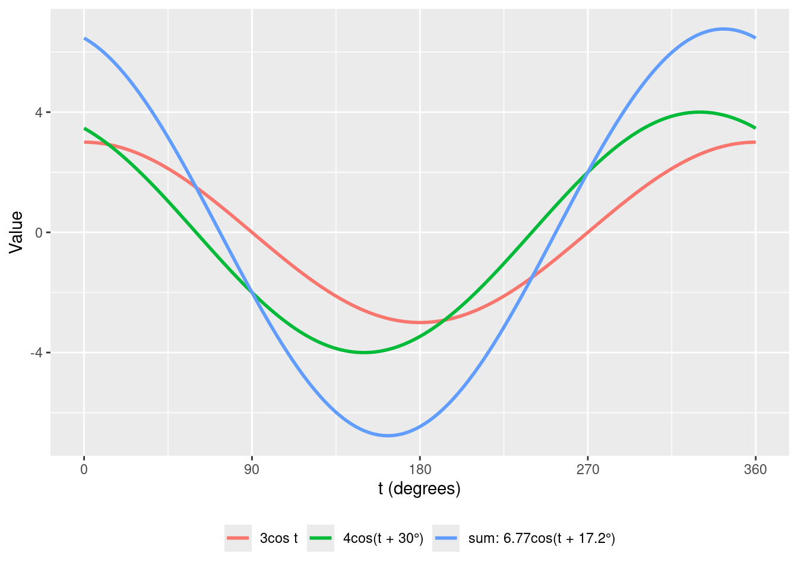
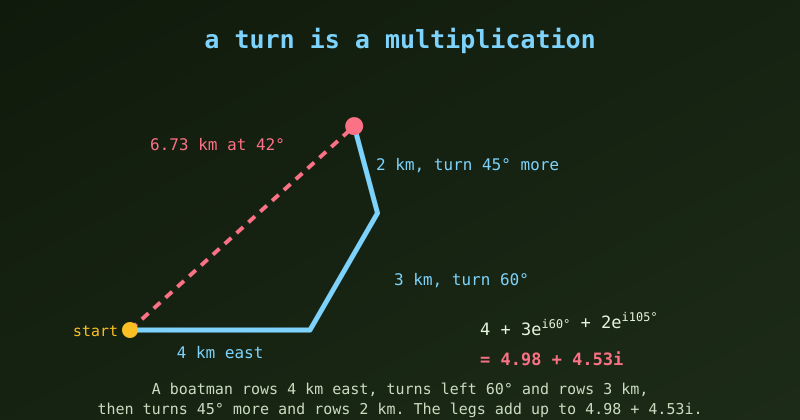

A boatman who keeps changing direction, and waves that start at different times, are the same kind of problem, and both are clumsy with trigonometry. (In an earlier post we saw that complex numbers handle them easily.) Let’s work through examples both ways, starting with the boatman.
The idea
A boat leg, a distance \(d\) in a heading \(\theta\), is the arrow \(d\,e^{i\theta}\): length \(d\), angle \(\theta\). A wave \(A\cos(t + \phi)\) with strength \(A\) and timing \(\phi\) works the same way, as the arrow \(A\,e^{i\phi}\). In both cases:
- Adding waves (or legs) is adding arrows.
- Turning by an angle \(\alpha\) is multiplying by \(e^{i\alpha}\).
Example 1: a boatman who turns
A boatman rows 4 km east, turns left by 60°, and rows 3 km. How far is he from the start, and in which direction?
The trigonometry way
The two legs and the straight line back to the start form a triangle. The angle inside the triangle at the turn is \(180^\circ - 60^\circ = 120^\circ\) (an easy place to slip).
Law of cosines for the distance:
\[d^2 = 4^2 + 3^2 - 2(4)(3)\cos 120^\circ = 25 + 12 = 37, \qquad d \approx 6.08 \text{ km}\]
Law of sines for the direction at the start:
\[\sin\alpha = \frac{3\sin 120^\circ}{6.08} \approx 0.427 \quad\Rightarrow\quad \alpha \approx 25.3^\circ\]
(The sine rule can give two possible angles, so we must check that the acute one is right.)
The complex way
East is the direction \(e^{i0^\circ} = 1\). After a 60° left turn he faces \(e^{i60^\circ}\):
\[ 4 + 3e^{i60^\circ} = 4 + 3(0.5 + 0.866i) = 5.5 + 2.598i \]
Distance: \(\sqrt{5.5^2 + 2.598^2} = \sqrt{37} \approx 6.08\) km. Direction: \(\tan^{-1}(2.598/5.5) \approx 25.3^\circ\) north of east. The same result with no triangle drawing and no ambiguity.
Example 2: he turns again
After the second leg, the boatman turns left by another 45° and rows 2 km more. His heading is now \(60^\circ + 45^\circ = 105^\circ\).
The trigonometry way
We must start a new triangle with the result so far (6.08 km at 25.3°) and the new leg (2 km at 105°):
- Angle between them: \(105^\circ - 25.3^\circ = 79.7^\circ\), so the angle inside the triangle is \(180^\circ - 79.7^\circ = 100.3^\circ\).
- Law of cosines: \(d^2 = 6.08^2 + 2^2 - 2(6.08)(2)\cos 100.3^\circ \approx 37 + 4 + 4.37 = 45.4\), so \(d \approx 6.73\) km.
- Law of sines: \(\sin\beta = \dfrac{2\sin 100.3^\circ}{6.73} \approx 0.292\), so \(\beta \approx 17.0^\circ\).
- Direction: \(25.3^\circ + 17.0^\circ = 42.3^\circ\).
Every extra leg needs a new triangle, a new interior angle to track, and the earlier rounding errors carry along.
The complex way
The third leg is just another arrow, \(2e^{i105^\circ} = -0.518 + 1.932i\). Add it to what we have:
\[ 4 + 3e^{i60^\circ} + 2e^{i105^\circ} = 5.5 + 2.598i + (-0.518 + 1.932i) = 4.982 + 4.530i \]
Distance: \(\sqrt{4.982^2 + 4.530^2} \approx 6.73\) km. Direction: \(\tan^{-1}(4.530/4.982) \approx 42.3^\circ\). A fourth leg would be one more term.
Example 3: two waves
Add \(3\cos t\) and \(4\cos(t + 30^\circ)\).
The trigonometry way
Expand the second wave with \(\cos(A + B) = \cos A\cos B - \sin A\sin B\):
\[4\cos(t + 30^\circ) = 4\cos t\,\cos 30^\circ - 4\sin t\,\sin 30^\circ = 3.464\cos t - 2\sin t\]
Add the first wave:
\[3\cos t + 3.464\cos t - 2\sin t = 6.464\cos t - 2\sin t\]
This is not yet one wave. We want \(R\cos(t + \varphi) = R\cos\varphi\cos t - R\sin\varphi\sin t\), so we match coefficients:
\[R\cos\varphi = 6.464, \qquad R\sin\varphi = 2\]
Square and add to get the strength: \(R = \sqrt{6.464^2 + 2^2} = \sqrt{45.78} \approx 6.77\).
Divide to get the timing: \(\tan\varphi = 2/6.464\), so \(\varphi \approx 17.2^\circ\).
Result: \(6.77\cos(t + 17.2^\circ)\), after five steps and an identity we had to remember.
The complex way
\[ 3 + 4e^{i30^\circ} = 3 + 4(\cos 30^\circ + i\sin 30^\circ) = 6.464 + 2i \]
The length is \(\sqrt{6.464^2 + 2^2} \approx 6.77\) and the angle is \(\tan^{-1}(2/6.464) \approx 17.2^\circ\). The same answer, but there was no identity to recall and no matching step. The length and angle come straight off the number.
Example 4: three waves
Now add a third wave, \(2\cos(t + 120^\circ)\), to the first two.
The trigonometry way
We must expand every shifted wave, then collect the cosine and sine terms:
\[ \begin{aligned} 4\cos(t + 30^\circ) &= 3.464\cos t - 2\sin t \\ 2\cos(t + 120^\circ) &= -1\cos t - 1.732\sin t \end{aligned} \]
Total: \((3 + 3.464 - 1)\cos t + (-2 - 1.732)\sin t = 5.464\cos t - 3.732\sin t\).
Then match to \(R\cos(t + \varphi)\) again: \(R = \sqrt{5.464^2 + 3.732^2} \approx 6.62\) and \(\tan\varphi = 3.732/5.464\), giving \(\varphi \approx 34.3^\circ\).
Each extra wave costs another identity expansion.
The complex way
Just add another arrow:
\[ 3 + 4e^{i30^\circ} + 2e^{i120^\circ} = (6.464 + 2i) + (-1 + 1.732i) = 5.464 + 3.732i \]
Its length is \(\sqrt{5.464^2 + 3.732^2} \approx 6.62\) and its angle is \(\tan^{-1}(3.732/5.464) \approx 34.3^\circ\). A fourth or fifth wave is one more term in the sum.
Why trigonometry is clumsy here
| Task | Trigonometry | Complex numbers |
|---|---|---|
| Keep track of a turn | Interior angles and \(180^\circ - \theta\) | Multiply by \(e^{i\alpha}\) |
| Direction | Law of sines (two possible angles) | \(\tan^{-1}\) of the sum |
| Add one more leg or wave | New triangle or new expansion | One more term |
| Add a shifted wave | Expand with an identity, then match \(R\cos(t + \varphi)\) | Add one arrow |
Note
The final arithmetic is the same: both methods end up with the same cosines and sines of angles. What complex numbers remove is the bookkeeping: identities to recall, triangles to draw, and angles to track. That is why engineers use them for AC circuits, where dozens of waves with different phases have to be added.
Key takeaway
- A wave with a phase, or a boat leg with a heading, is an arrow \(A\,e^{i\theta}\).
- Adding is adding arrows, and turning is multiplying by \(e^{i\alpha}\).
- Trigonometry does the same job, but each extra wave or leg means another identity or another triangle.